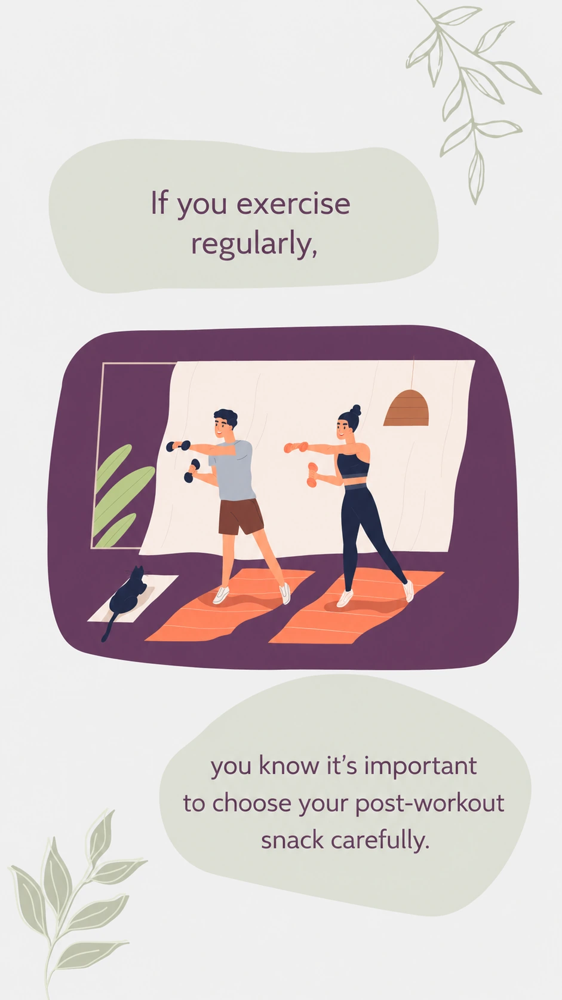
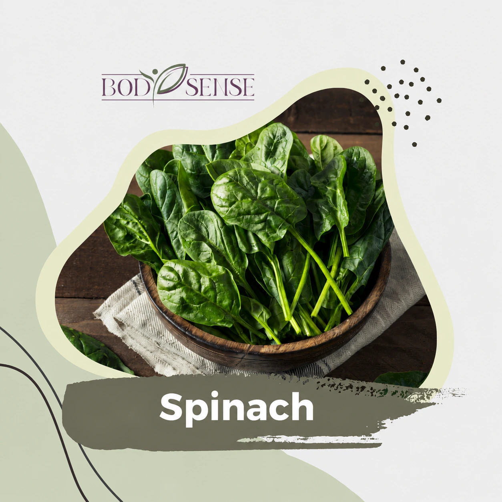
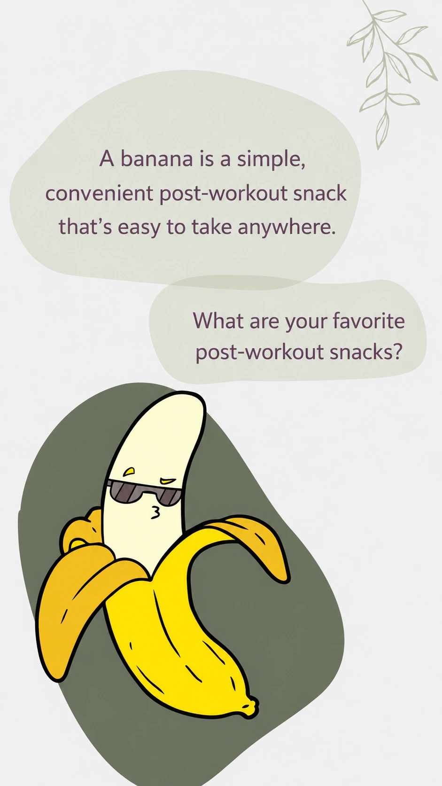

Turning specialist knowledge into an ongoing Instagram content workflow.
Period
June – November 2023
Channels
Instagram · Feed & Stories
My role
Content planning, topic selection, research and drafting, visual design, publishing, and community management.
Team & boundaries
Worked within an existing brand identity and Feed cover system. Specialist input, review, and approval supported content accuracy.
Selected deliverables
Educational posts, sequential Stories, service reminders, and reusable client-education content.



English portfolio adaptations of selected client work. Original Persian-language Feed content and Insights appear below.
The context
Stay useful between clinic visits
The clinic already had a visual identity and service-explanation content. Its ongoing Instagram activity needed to reinforce expertise, show that the clinic was active, and keep services relevant to existing and returning audiences.
The communication focus
Practical education informed by specialist experience.
Consistent Feed and Story activity.
Service reminders and reasons to reconnect.
A useful extension of the work
Some published educational posts became reusable assets in client advice: the specialist could send a relevant post directly to a client for further explanation.
How I approached it
Connect expertise, format, and follow-through
01
Use real questions as editorial inputs
I drew topics from seasonal context, specialist recommendations, and recurring client behaviors. Educational content moved through research, drafting, expert review, revision, design, and approval before publishing.
Specialist-informed educationFood topics connected to everyday adviceEveryday movementAn accessible home-workout topicEveryday guidanceInformation shaped for the Story format
02
Build understanding across Stories
Stories were planned in sequences rather than as isolated items. This four-frame example opens with a familiar question, introduces the topic, groups the key information, and closes with a practical next step.
01 / Open the topicStart with a familiar question02 / ExplainIntroduce the background03 / Organize the informationMake the key points easy to scan04 / Offer a next stepClose with guidance
03
Connect publishing with community care
I handled routine inquiries using standardized responses for appointments, location, packages, and service information. Questions requiring nutrition or device expertise went to the relevant specialist.
The brand identity and Feed cover system already existed. My contribution was the content planning, development, visual execution, and ongoing management within that system.
Selected deliverables
A consistent presence across formats
Educational Feed content and more conversational Stories used the existing visual language in different ways.
Post-workout nutritionOpen a practical topicInvite a responseContinue the conversationService explanationMake the clinic experience visible
Selected Feed content · original Persian-language client work.
Evidence & learning
What the surviving records show
Complete period-level analytics were not available. These are two independent Story examples, with different content and audience conditions.
Story sample 1
Recorded Story activity
194Views shown in the archive
1Profile visit
Story sample 2
Recorded Story activity
1,080Views shown in the archive
35Profile visits
These snapshots are not matched samples or period averages. They do not establish a percentage improvement, an average-view increase, or the effect of one content decision.
Observations from the work
I recalled stronger saves and shares around educational content, and more direct questions from conversational Stories. These patterns were not validated by the recovered Insights.
A reasonable next test
Compare conversational Story formats and service reminders across a broader sample, while keeping topic, timing, and distribution context in view.
Scope and specialist collaboration
Owned: content planning, topic selection, Feed and Story content structure, research and drafting, visual execution, scheduling, publishing, and community management.
Specialist input and approval: nutrition recommendations, content accuracy, and questions requiring clinical expertise.
Existing inputs: overall brand identity and Feed cover system.
Independent concept / Not a client result
Design exploration
NourishWell
An English-language wellness visual direction informed by the BodySense experience.
This concept explores how a new identity could extend across educational carousels and infographics. It is presented as a design exploration, with no client-performance claims.
Visual directionFrom initial motifs to a consistent markInfographicInformation grouped into a visual overviewEducational postA repeatable hierarchy for short information
Explore the four-slide protein carousel
Carousel openingA shared visual languageSlide 2Plant-based optionsSlide 3A consistent information structureSlide 4The same format across content variants